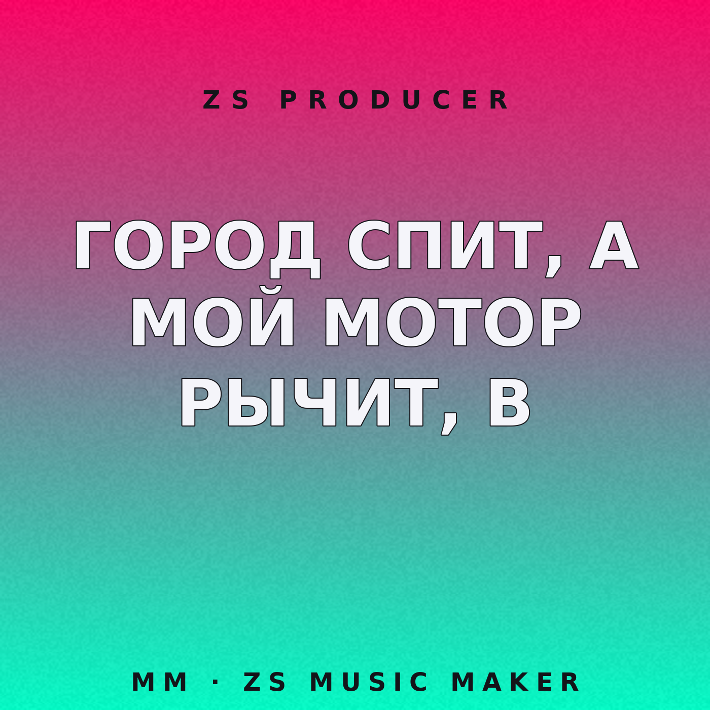
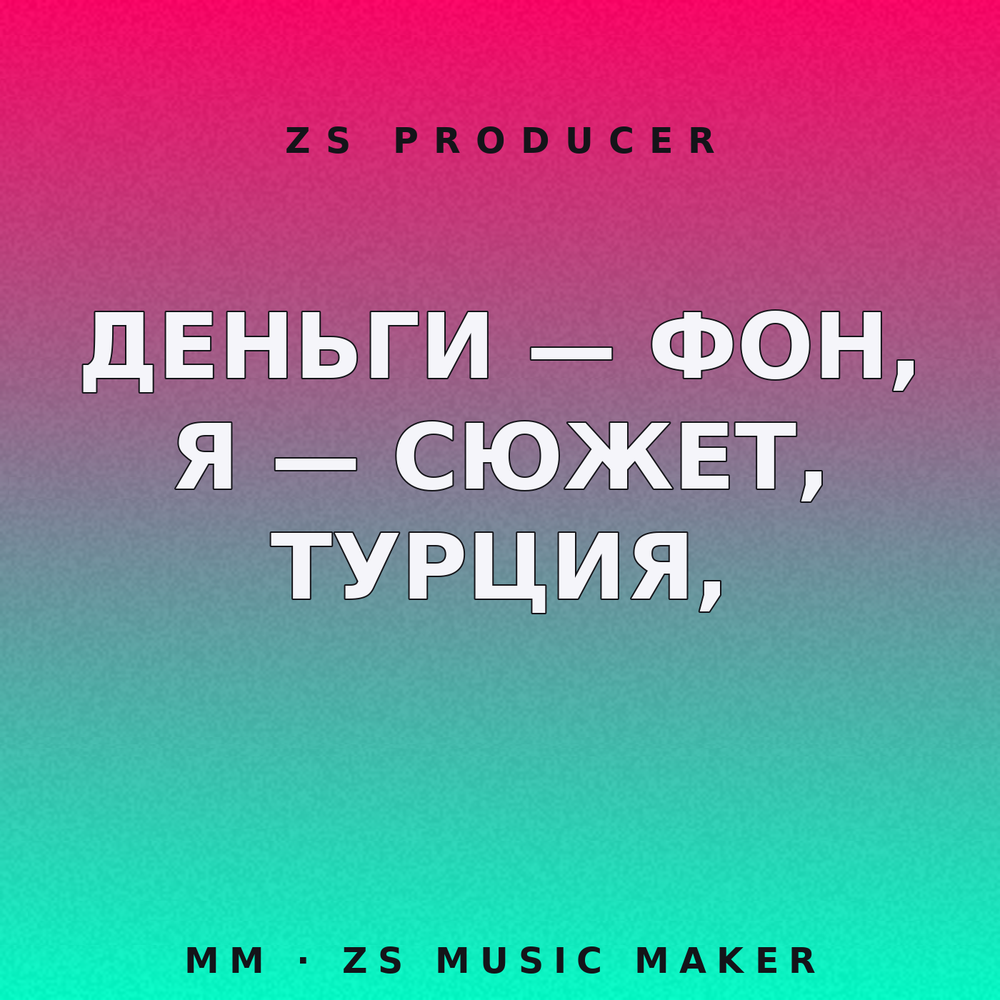
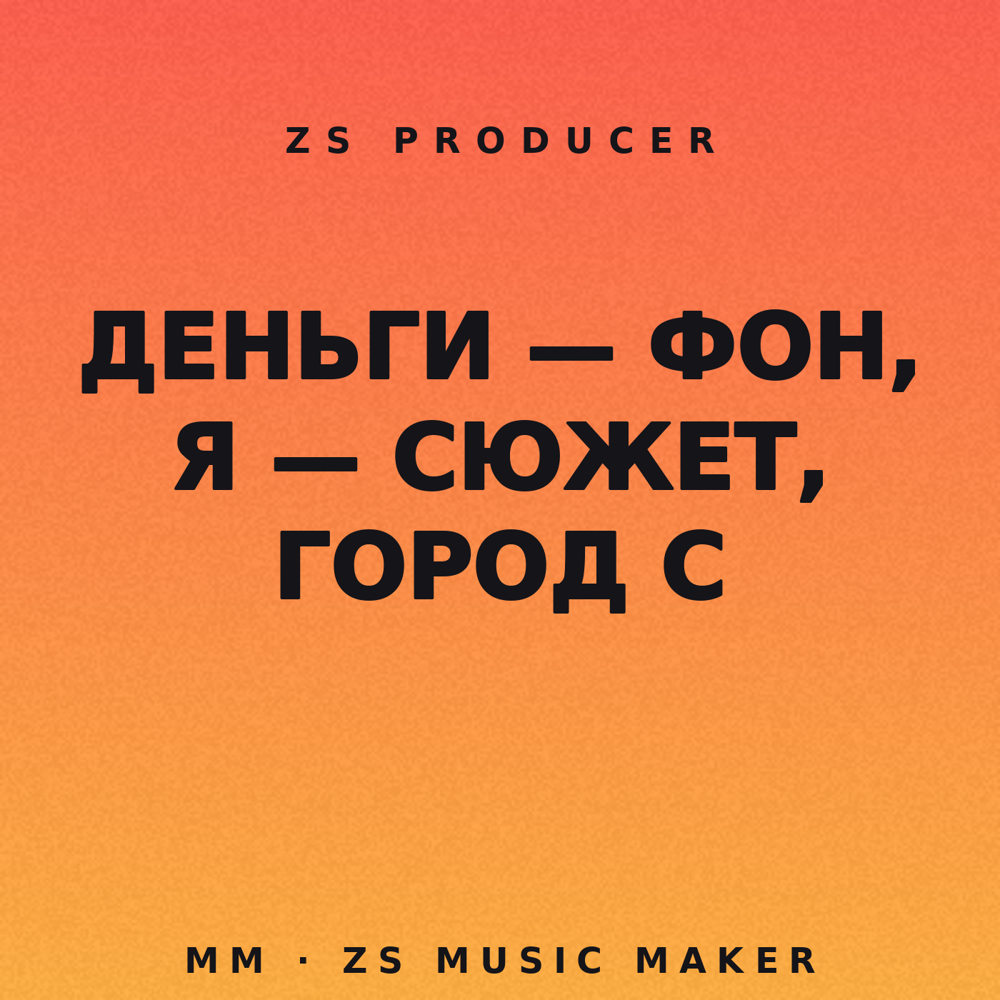

ZS MUSIC MAKER — HIT FACTORY HYGIENE 41.1.2
Любое железо: AMD/NVIDIA/Intel/CPU + RAM/VRAM → auto 90-120с • не игрушечно — enhanced DSP (сатурация+хорус+EQ) даже без GPU • hygiene 308/221/75 • LIVE PREVIEW 8000 • main a4249ee + 41.1.2 → 2102 passed
▶ NEW 41.1.2 — Trap 30с — 68.1 solid — HYGIENE 308 ultra_light enhanced 30сtrap 148 BPM68.1 solidenhanced DSP ✓aggression 0.8

vocal_presence 65structure 61novelty 69distortion 100tiktok off
TikTok 15с

▶ Trap 90с — 69.28 solid — ADAPTIVE ultra_light enhanced 90сtrap 143 BPMenhanced DSP ✓adaptive lvl 0

hook_repeat 69.5drop 44stereo 0.64BPM 75aggression 0.75tiktok 56-81с
TikTok 15с (56-81с)

▶ Jersey club — 73.45 solid (лучший 30с)

jersey 136 BPMhook_energy 94drop 100stereo 0.76loudness -14.1
▶ Phonk — 70.59 solid (30с, evolution)

phonk 152 BPMlow_end 92drop 83.8stereo 0.77